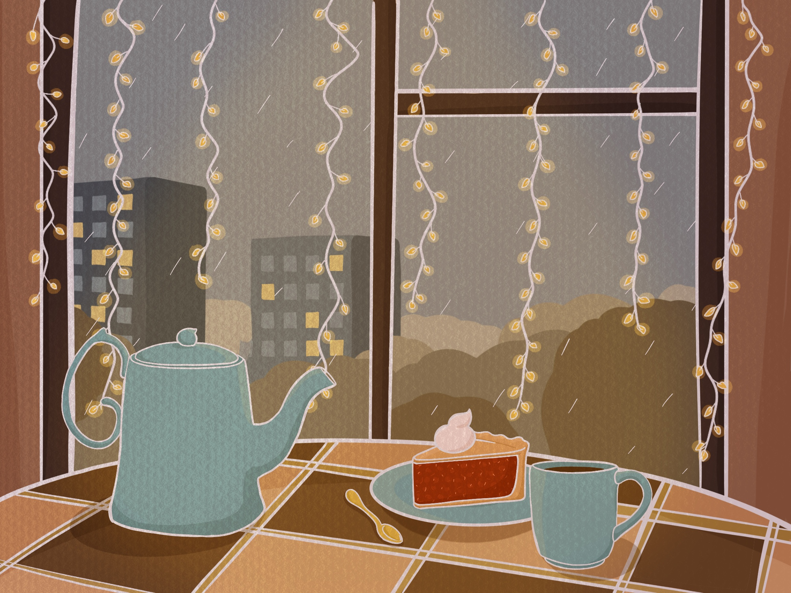
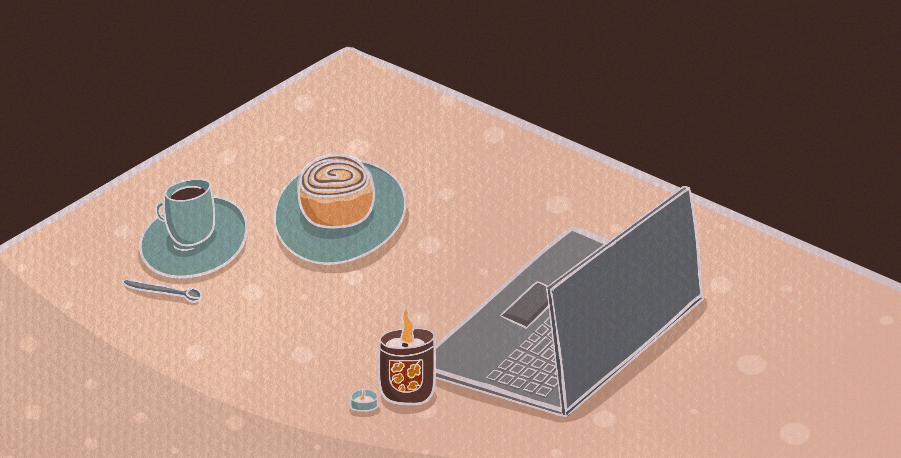

| Главная | Сборник | Задать вопрос | Отзывы | Заказать |  |
 |
| Главная | Сборник | Задать вопрос | Отзывы | Заказать | |
|
Как влюбиться в осень? |
|  |
|
Осень – это прекрасное время года, когда природа воплощает свою красоту в ярких красках и мягких оттенках. Однако, с ее наступлением, многие люди часто испытывают ощущение тоски и уныния. Но есть способ избежать этого и насладиться сезоном в полной мере – создать дома уют. Создание приятной атмосферы в доме помогает нам расслабиться и погрузиться в свои мысли и внутренний мир. |
|  |
|
Кухня – это сердце дома, место, где создается уют, готовится вкусная еда и встречаются близкие и друзья. Это место, где можно поделиться любовью и заботой. Осенний сезон – время, когда можно экспериментировать с разными ингредиентами и приготовить вкусные блюда. Печенье с корицей, горячий шоколад с маршмеллоу или ароматный яблочный пирог – все это превращает кухню в место, где мы можем наслаждаться не только вкусом, но и ароматами. Предлагаем вам приготовить традиционный яблочный пирог по нашему рецепту! |

|